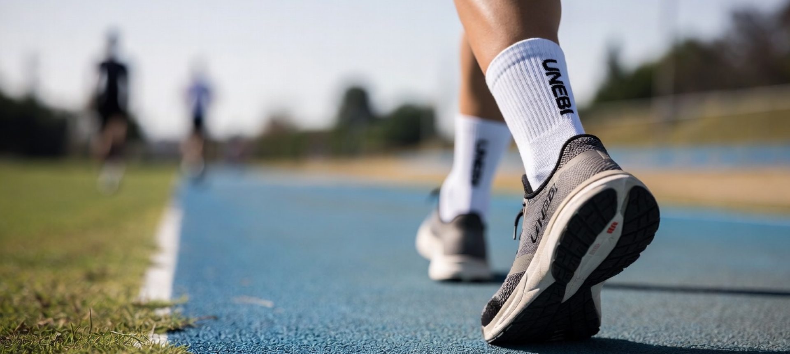
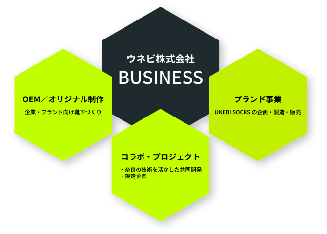
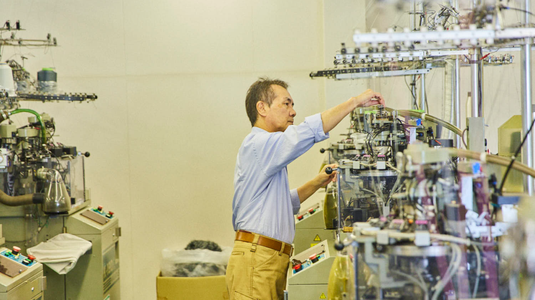
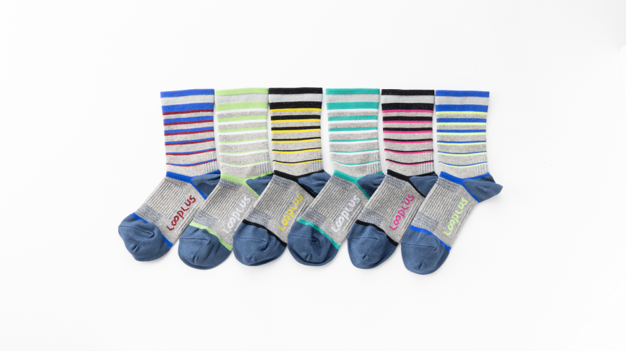
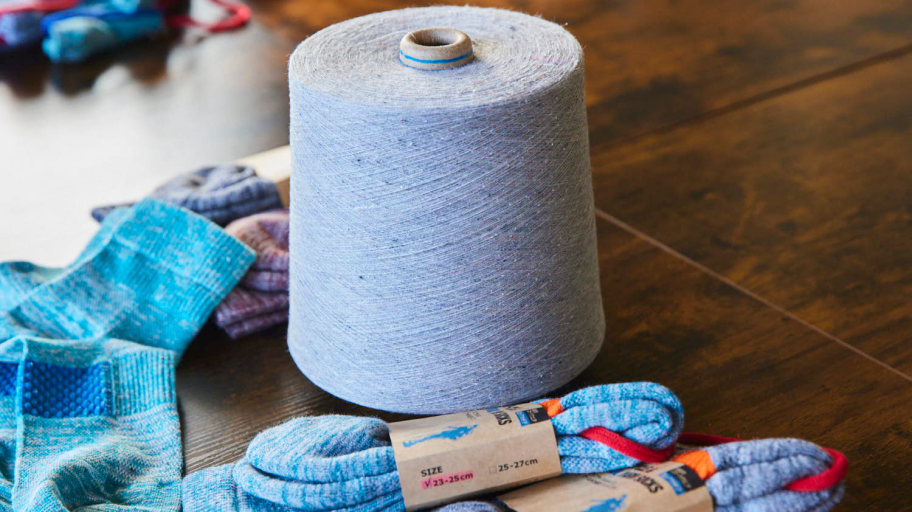
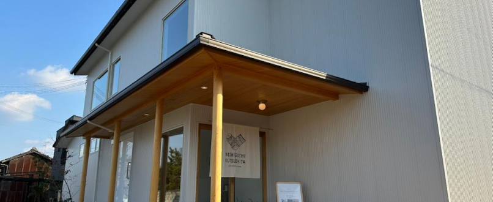
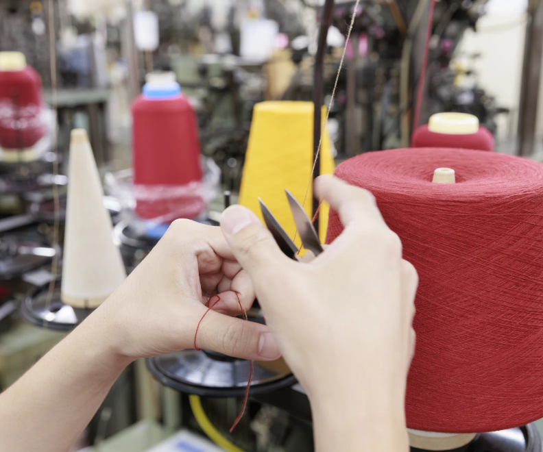
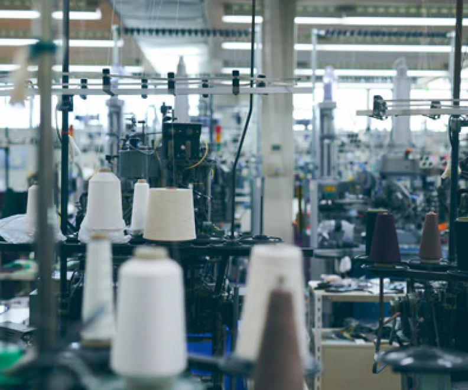
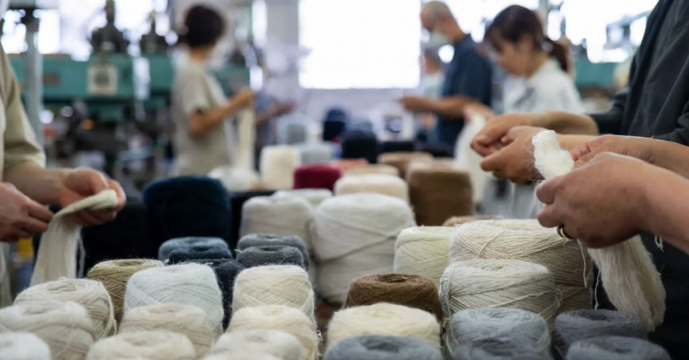
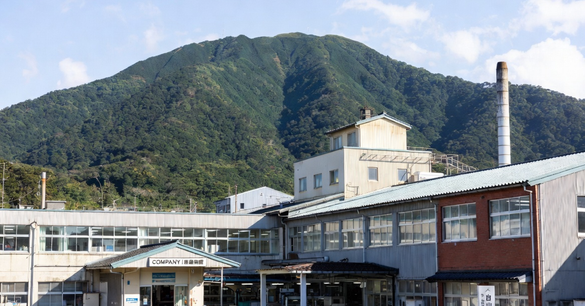

「つくる責任・つかう喜び」を大切に、未来へつながる生産を。
原料・製造工程・パッケージに至るまで環境負荷を最小限に抑えています。リサイクル糸やオーガニックコットンの活用、廃棄ゼロ化など、地球と人にやさしい持続可能なものづくりを推進しています。

PERFORMANCE BEGINS WITH THE THREAD
一本の糸のこだわりが、
あなたの足元を進化させる。
BUSINESS｜ 事業紹介
事業内容を詳しく見る
産地の技術を、ビジネスの力に。
OEMから自社ブランド、共同開発まで。
UNEBIは、靴下の一大産地・奈良で培われた歴史と技術を背景に、自社ブランド「UNEBI
SOCKS」をはじめ、OEM・共同企画など幅広いものづくりを展開しています。糸選びから編立・仕上げまで一貫して品質を追求し、履き心地・耐久性・デザイン性を兼ね備えた靴下を提供しています。
産地の技術 × 現代の感性で、
靴下づくりの新たなスタンダードを創造する。
UNEBIの3つの事業領域では、
蓄積された伝統技術と最新設備を融合し、
OEM
生産から自社ブランド、共同開発まで、
多様なニーズに的確にお応えします。


OEM／オリジナル制作
小ロットから量産まで対応。
企画設計〜生産管理まで一貫してサポート。

オリジナルブランド
機能性とデザインを両立するスポーツ・アスレジャー向けライン。

コラボレーション
ランニング・アウトドアブランドとの共同開発実績。
BRAND｜ ブランド
私たちの哲学を見る
1941年から続く、産地発の靴下づくり。
ウネビは、奈良・畝傍山の麓に根づく工場の歴史を引き継ぎ、細部へのこだわりと美しい履き心地を追求しています。職人の感性と最新設備を組み合わせ、心地よさ・美しさ・耐久性を備えた靴下を製造。リサイクル糸や環境配慮素材も積極的に導入し、日々の暮らしを豊かにする
"次のスタンダード" を発信します。
ブランドストーリー
奈良・畝傍山の麓で育まれてきた歴史。
創業当初から受け継がれる揺るぎない品質基準。
ブランドフィロソフィー
心地よさ・美しさ・耐久性を両立し、
"次のスタンダード"となるプロダクトを目指す。
職人と産地文化
糸選びから仕上げまで一貫管理。
細部にまで品質を宿すものづくりを追求します。

Origin

Philosophy

Craftsmanship

SUSTAINABILITY｜ サステナビリティ
RECRUIT ｜ 採用情報
伝統を受け継ぎ、新しい "靴下づくり" を創造する仲間を募集しています。
ウネビは、奈良の靴下産地で培われた技術を受け継ぎながら、職人の感性と最新の製造技術を融合し、暮らしを快適にする靴下づくりに挑んでいます。伝統を尊重しつつ、新しい価値を生み出したい方を歓迎します。奈良から世界へ心地よさを届ける
"ものづくり" に一緒に挑みませんか。

COMPANY ｜ 会社情報
奈良・橿原市の工場から、産地の技術と文化を未来へ。
ウネビの工場は、橿原市・畝傍山の麓で1941年に誕生し、ビジネスソックスからスポーツソックスまで幅広く製造してきました。現在も熟練職人の技と最新設備を組み合わせ、編立・縫製・仕上げを一貫生産する中核拠点として、ブランドの価値創出とOEMを支えています。